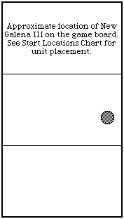
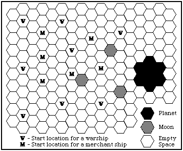

Scenario 13, prepared by David Ternes
Federation Convoy KF341
Convoy KF341 is a typical frontier convoy. It is composed of a small group of merchant ships, a few Star Fleet auxiliary freighters, and an escort of warships. It has just completed the transfer of cargo at New Galena. As it prepares to move away from the planet, a Klingon raiding group appears.
Orders. The escort for convoy KF341 is to protect the convoy from the enemy raiding force.
Force. Convoy KF341 includes the following units and vessels.
| Name | Class Name | Type | Class | CE | ||
|---|---|---|---|---|---|---|
| Defense Division 114a | ||||||
| USS Columbus (NCC-7123) | LaSalle Mk I | Frigate | X | 75 | Escort & Division Leader | |
| USS Dornier (NCC-3144) | Durrett Mk II | Cruiser | VIII | 70 | ||
| 808th Escort Squadron | ||||||
| USS Silver (NCC-3286) | Lenthal Mk V | Destroyer | IX | 67 | Division Leader | |
| USS Kemosabe (NCC-3287) | Lenthal Mk V | Destroyer | IX | 67 | ||
| USS Ruspoli (NCC-9236) | Genser Mk II | Escort | IV | 66 | ||
| USS Dremel (NCC-9231) | Genser Mk II | Escort | IV | 66 | ||
| Transport Division 354b | ||||||
| USS Troll (NCC-34054) | Aakenn Mk IV | Freighter | VI | 60 | Division Leader | |
| USS Orc (NCC-34015) | Aakenn Mk IV | Freighter | VI | 60 | ||
| Merchant Ships | ||||||
| Winsome | Liberty Mk I | Freighter | VII | 50 | ||
| Deep Space Merchant | Liberty Mk I | Freighter | VII | 50 | ||
| Edward Colmans | Liberty Mk III | Freighter | VII | 50 | ||
| Likes Columbia | Liberty Mk III | Freighter | VII | 50 | ||
| James Q. Wipple | Aakenn Mk I | Freighter | VII | 50 | ||
| Krazey | Kethkin Mk III | Tug | VII | 50 | ||
| Total Combat Efficiency: | 236.1 | Excludes merchant ships | ||||
Game Notes.
Setup Charts.
|  |  |